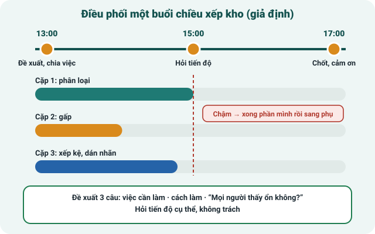

K9 · Lãnh đạo và phát triển người khác › Bậc 2 Bắt đầu
Lên tiếng đề xuất và điều phối một việc nhỏ của nhóm
Đây là "lãnh đạo không chức danh". Cách lập bảng phân công có ở bài Chia việc trong dự án nhóm (K8). Bài này tập phần lên tiếng và điều phối.
1. Mục tiêu
- Đề xuất cách làm khi chưa ai lên tiếng, trong 3 câu, kèm câu xin ý kiến.
- Điều phối một việc nhỏ theo 4 bước, đến khi chốt lại với nhóm.
2. Khởi động truy xuất
- Phiếu thử nhỏ có 4 ô nào?
- Sau khi thử, góp ý cải tiến gồm 3 dòng nào?
Đáp án
- Cách cũ; cách mới; đo gì; thử bao lâu.
- Đã thử gì, bao lâu; kết quả trước và sau; đề xuất giữ, bỏ hay thử tiếp.
Xem lại: Thử một cách làm mới nhỏ.
3. Giải thích
Có lúc cả nhóm im lặng. Ai cũng chờ người khác nói trước. Việc cứ trôi, đến sát hạn thì vội. Lúc đó, một người lên tiếng đề xuất có thể giúp cả nhóm bắt đầu.
Đề xuất trong 3 câu:
Đề xuất 3 câu
- Nêu việc cần làm"Mình cần chuẩn bị tiệc chia tay chị Mai trước thứ Sáu."
- Đề xuất cách làm"Mình đề xuất chia 3 phần: quà, bánh, trang trí."
- Xin ý kiến"Mọi người thấy được không, hay có cách khác?"
Câu thứ ba rất quan trọng. Đề xuất không phải là ra lệnh. Bạn mở đường, rồi để nhóm cùng quyết.
Điều phối một việc nhỏ: 4 bước.
1. Xin nhận điều phối 2. Chia việc, chốt hạn 3. Hỏi tiến độ giữa chừng 4. Chốt lại kết quả
Bước 1. Xin nhận điều phối. "Nếu mọi người đồng ý, mình điều phối việc này nhé." Ở chỗ làm, hỏi quản lý trước nếu việc liên quan khách hàng hay tiền.
Bước 2. Chia việc, chốt hạn. Mỗi phần một người phụ trách, có hạn rõ. Ghi lại và gửi vào nhóm chat.
Bước 3. Hỏi tiến độ giữa chừng. Hỏi cụ thể, không trách. "Phần bánh đặt chưa Tùng? Cần mình hỗ trợ gì không?"
Bước 4. Chốt lại kết quả. Báo nhóm việc đã xong, cảm ơn từng người. Nếu có điều nên làm khác lần sau, ghi lại một dòng.
Làm mẫu bằng việc của mình. Người điều phối mà trễ hạn thì khó nhắc người khác. Phần việc của bạn nên xong đúng hạn, đúng chuẩn. Đó là cách dẫn dắt dễ thấy nhất.
Khi nhóm không đồng ý đề xuất của bạn. Không sao. Nếu nhóm chọn cách khác, hãy làm tốt phần của mình trong cách đó.
4. Ví dụ tại nơi làm việc Việt Nam
Tình huống giả định. Sáu nhân viên mới ở một khách sạn nhỏ được giao dọn và sắp xếp lại kho đồ vải trong một buổi chiều. Mọi người đứng nhìn nhau.
Khoa lên tiếng:
"Mình cần xếp lại kho trước 5 giờ. Mình đề xuất chia 3 cặp: một cặp phân loại, một cặp gấp, một cặp xếp lên kệ và dán nhãn. Mọi người thấy ổn không?"
Cả nhóm đồng ý. Khoa nhắn vào nhóm chat ai làm phần nào. Lúc 3 giờ, Khoa hỏi từng cặp còn bao nhiêu. Cặp gấp đang chậm, Khoa xong phần mình rồi sang phụ. Lúc 5 giờ, Khoa báo anh giám sát đã xong, và cảm ơn cả nhóm.

Vì sao cách này tốt: Khoa đề xuất 3 câu có xin ý kiến. Khoa chia việc rõ, hỏi tiến độ giữa chừng, và chốt lại với cấp trên.
5. Thực hành
Tình huống giả định. Lớp bạn có 2 tuần để làm một video giới thiệu ngành học cho học sinh lớp 12. Sau buổi đầu, chưa ai nói gì về cách làm.
Viết đề xuất 3 câu, rồi viết 4 bước điều phối bạn sẽ làm.
Gợi ý 1
Video gồm những phần nào: kịch bản, quay, dựng, xin phép người được quay?
Lời giải mẫu
Đề xuất: "Mình cần nộp video sau 2 tuần. Mình đề xuất chia 4 phần: kịch bản, quay, dựng, xin phép người xuất hiện. Mọi người thấy được không?"
- "Nếu mọi người đồng ý, mình điều phối nhé."
- Ghi người phụ trách và hạn từng phần vào nhóm chat. Hạn dựng xong trước hạn nộp 3 ngày.
- Hết tuần đầu, hỏi từng người tiến độ.
- Nộp xong thì báo nhóm, cảm ơn, ghi một điều nên làm khác lần sau.
6. Tự kiểm tra
Chọn đáp án. Mỗi lựa chọn đều có giải thích.
Câu 1. Câu nào nên dùng để kết thúc một đề xuất cho nhóm?
-
Chưa đúng. Câu này giống ra lệnh. Nhóm chưa được góp ý.
-
Đúng. Đúng. Xin ý kiến giúp nhóm cùng quyết và dễ ủng hộ hơn.
-
Chưa đúng. Không hỏi ý kiến thì chưa biết nhóm có đồng ý không.
Câu 2. Giữa chừng, một bạn chưa làm phần của mình. Cách hỏi nào phù hợp?
-
Chưa đúng. Trách móc làm bạn ấy khó nói thật về chỗ vướng.
-
Đúng. Đúng. Hỏi cụ thể và đề nghị hỗ trợ giúp gỡ việc nhanh hơn.
-
Chưa đúng. Làm hộ mà không trao đổi dễ gây trùng việc và không giải quyết gốc.
Câu 3. Việc điều phối liên quan đến tiền quỹ của cửa hàng. Bạn nên làm gì trước?
-
Chưa đúng. Việc liên quan tiền ở chỗ làm cần hỏi quản lý trước.
-
Đúng. Đúng. Việc liên quan khách hàng hay tiền cần người có thẩm quyền đồng ý.
-
Chưa đúng. Bỏ dở một phần làm việc chung không hoàn thành.
Câu 4. Vì sao người điều phối nên làm xong phần của mình đúng hạn?
-
Chưa đúng. Mục đích không phải để chê ai.
-
Đúng. Đúng. Người điều phối trễ hạn thì khó nhắc nhóm giữ hạn.
-
Chưa đúng. Không có thưởng nào ở đây. Lý do là làm mẫu cho nhóm.
7. Phản tư
- Lần gần nhất nhóm bạn im lặng, điều gì làm bạn không lên tiếng?
- Phần việc của chính bạn có đúng hạn đủ để làm mẫu cho nhóm không?
8. Áp dụng thật
Trong 7 ngày tới, chọn một việc nhỏ của nhóm chưa có ai nhận. Đề xuất bằng 3 câu. Nếu nhóm đồng ý, điều phối đến khi chốt lại. Ghi lại một điều bạn sẽ làm khác lần sau.
9. Siêu dữ liệu
| skill | K9 · Lãnh đạo và phát triển người khác |
|---|---|
| level | Bậc 2 · Bắt đầu |
| group | N2, N3 |
| framework_map | WEF: Leadership and social influence; SkillsFuture CCS: Influence; Developing People; NACE: Leadership (chỉ dẫn chiếu) |
| updated | 2026-11-14 |
Hoàn thành bài
Đánh dấu đã học để site gợi ý lịch ôn sau 1, 3 và 7 ngày. Dữ liệu chỉ lưu trên máy của bạn.
Lịch ôn gợi ý: